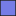
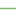

<!doctype html>
<html lang="en">
    <head>
        <meta charset="utf-8">
        <meta http-equiv="X-UA-Compatible" content="IE=edge">
        <meta name="viewport" content="initial-scale=1,user-scalable=no,maximum-scale=1,width=device-width">
        <meta name="mobile-web-app-capable" content="yes">
        <meta name="apple-mobile-web-app-capable" content="yes">
        <link rel="stylesheet" href="css/leaflet.css"><link rel="stylesheet" href="css/L.Control.Locate.min.css">
        <link rel="stylesheet" href="css/qgis2web.css"><link rel="stylesheet" href="css/fontawesome-all.min.css">
        <link rel="stylesheet" href="css/leaflet-measure.css">
        <style>
        html, body, #map {
            width: 100%;
            height: 100%;
            padding: 0;
            margin: 0;
        }
        </style>
        <title></title>
    </head>
    <body>
        <div id="map">
        </div>
        <script src="js/qgis2web_expressions.js"></script>
        <script src="js/leaflet.js"></script>
        <script src="js/L.Control.Locate.min.js"></script>
        <script src="js/leaflet.rotatedMarker.js"></script>
        <script src="js/leaflet.pattern.js"></script>
        <script src="js/leaflet-hash.js"></script>
        <script src="js/Autolinker.min.js"></script>
        <script src="js/rbush.min.js"></script>
        <script src="js/labelgun.min.js"></script>
        <script src="js/labels.js"></script>
        <script src="js/leaflet-measure.js"></script>
        <script src="data/_1.js"></script>
        <script src="data/dorogi_2.js"></script>
        <script src="data/123_3.js"></script>
        <script>
        var map = L.map('map', {
            zoomControl:true, maxZoom:28, minZoom:1
        }).fitBounds([[62.7443811427671,129.6232355709061],[62.772475513482036,129.7027586050469]]);
        var hash = new L.Hash(map);
        map.attributionControl.setPrefix('<a href="https://github.com/tomchadwin/qgis2web" target="_blank">qgis2web</a> &middot; <a href="https://leafletjs.com" title="A JS library for interactive maps">Leaflet</a> &middot; <a href="https://qgis.org">QGIS</a>');
        L.control.locate({locateOptions: {maxZoom: 19}}).addTo(map);
        var measureControl = new L.Control.Measure({
            position: 'topleft',
            primaryLengthUnit: 'meters',
            secondaryLengthUnit: 'kilometers',
            primaryAreaUnit: 'sqmeters',
            secondaryAreaUnit: 'hectares'
        });
        measureControl.addTo(map);
        document.getElementsByClassName('leaflet-control-measure-toggle')[0]
        .innerHTML = '';
        document.getElementsByClassName('leaflet-control-measure-toggle')[0]
        .className += ' fas fa-ruler';
        var bounds_group = new L.featureGroup([]);
        function setBounds() {
        }
        var layer_2gisMap_0 = L.tileLayer('http://tile2.maps.2gis.com/tiles?x={x}&y={y}&z={z}&v=1.1', {
            opacity: 1.0,
            attribution: '',
            minZoom: 1,
            maxZoom: 28,
            minNativeZoom: 0,
            maxNativeZoom: 18
        });
        layer_2gisMap_0;
        map.addLayer(layer_2gisMap_0);
        function pop__1(feature, layer) {
            var popupContent = '<table>\
                    <tr>\
                        <td colspan="2">' + (feature.properties['id'] !== null ? Autolinker.link(feature.properties['id'].toLocaleString()) : '') + '</td>\
                    </tr>\
                    <tr>\
                        <td colspan="2">' + (feature.properties['кад.н�'] !== null ? Autolinker.link(feature.properties['кад.н�'].toLocaleString()) : '') + '</td>\
                    </tr>\
                    <tr>\
                        <td colspan="2">' + (feature.properties['катег'] !== null ? Autolinker.link(feature.properties['катег'].toLocaleString()) : '') + '</td>\
                    </tr>\
                    <tr>\
                        <td colspan="2">' + (feature.properties['адрес'] !== null ? Autolinker.link(feature.properties['адрес'].toLocaleString()) : '') + '</td>\
                    </tr>\
                    <tr>\
                        <td colspan="2">' + (feature.properties['общ.п�'] !== null ? Autolinker.link(feature.properties['общ.п�'].toLocaleString()) : '') + '</td>\
                    </tr>\
                    <tr>\
                        <td colspan="2">' + (feature.properties['форм.�'] !== null ? Autolinker.link(feature.properties['форм.�'].toLocaleString()) : '') + '</td>\
                    </tr>\
                    <tr>\
                        <td colspan="2">' + (feature.properties['стату'] !== null ? Autolinker.link(feature.properties['стату'].toLocaleString()) : '') + '</td>\
                    </tr>\
                    <tr>\
                        <td colspan="2">' + (feature.properties['кад.к�'] !== null ? Autolinker.link(feature.properties['кад.к�'].toLocaleString()) : '') + '</td>\
                    </tr>\
                    <tr>\
                        <td colspan="2">' + (feature.properties['кад.с�'] !== null ? Autolinker.link(feature.properties['кад.с�'].toLocaleString()) : '') + '</td>\
                    </tr>\
                </table>';
            layer.bindPopup(popupContent, {maxHeight: 400});
        }

        function style__1_0() {
            return {
                pane: 'pane__1',
                opacity: 1,
                color: 'rgba(133,182,111,1.0)',
                dashArray: '',
                lineCap: 'square',
                lineJoin: 'bevel',
                weight: 1.0,
                fillOpacity: 0,
                interactive: true,
            }
        }
function onMapClick(e) {
    var marker = L.marker(e.latlng).addTo(map);
}

map.on('click', onMapClick);

        map.createPane('pane__1');
        map.getPane('pane__1').style.zIndex = 401;
        map.getPane('pane__1').style['mix-blend-mode'] = 'normal';
        var layer__1 = new L.geoJson(json__1, {
            attribution: '',
            interactive: true,
            dataVar: 'json__1',
            layerName: 'layer__1',
            pane: 'pane__1',
            onEachFeature: pop__1,
            style: style__1_0,
        });
        bounds_group.addLayer(layer__1);
        map.addLayer(layer__1);
        function pop_dorogi_2(feature, layer) {
            var popupContent = '<table>\
                    <tr>\
                        <td colspan="2">' + (feature.properties['вид'] !== null ? Autolinker.link(feature.properties['вид'].toLocaleString()) : '') + '</td>\
                    </tr>\
                    <tr>\
                        <td colspan="2">' + (feature.properties['кад. н'] !== null ? Autolinker.link(feature.properties['кад. н'].toLocaleString()) : '') + '</td>\
                    </tr>\
                    <tr>\
                        <td colspan="2">' + (feature.properties['кад. к'] !== null ? Autolinker.link(feature.properties['кад. к'].toLocaleString()) : '') + '</td>\
                    </tr>\
                    <tr>\
                        <td colspan="2">' + (feature.properties['стату'] !== null ? Autolinker.link(feature.properties['стату'].toLocaleString()) : '') + '</td>\
                    </tr>\
                    <tr>\
                        <td colspan="2">' + (feature.properties['адрес'] !== null ? Autolinker.link(feature.properties['адрес'].toLocaleString()) : '') + '</td>\
                    </tr>\
                    <tr>\
                        <td colspan="2">' + (feature.properties['кат. з'] !== null ? Autolinker.link(feature.properties['кат. з'].toLocaleString()) : '') + '</td>\
                    </tr>\
                    <tr>\
                        <td colspan="2">' + (feature.properties['форма'] !== null ? Autolinker.link(feature.properties['форма'].toLocaleString()) : '') + '</td>\
                    </tr>\
                    <tr>\
                        <td colspan="2">' + (feature.properties['кад. с'] !== null ? Autolinker.link(feature.properties['кад. с'].toLocaleString()) : '') + '</td>\
                    </tr>\
                    <tr>\
                        <td colspan="2">' + (feature.properties['площа'] !== null ? Autolinker.link(feature.properties['площа'].toLocaleString()) : '') + '</td>\
                    </tr>\
                    <tr>\
                        <td colspan="2">' + (feature.properties['разр.'] !== null ? Autolinker.link(feature.properties['разр.'].toLocaleString()) : '') + '</td>\
                    </tr>\
                    <tr>\
                        <td colspan="2">' + (feature.properties['по до�'] !== null ? Autolinker.link(feature.properties['по до�'].toLocaleString()) : '') + '</td>\
                    </tr>\
                </table>';
            layer.bindPopup(popupContent, {maxHeight: 400});
        }

        function style_dorogi_2_0() {
            return {
                pane: 'pane_dorogi_2',
                opacity: 1,
                color: 'rgba(114,155,111,1.0)',
                dashArray: '',
                lineCap: 'square',
                lineJoin: 'bevel',
                weight: 1.0,
                fillOpacity: 0,
                interactive: true,
            }
        }
        map.createPane('pane_dorogi_2');
        map.getPane('pane_dorogi_2').style.zIndex = 402;
        map.getPane('pane_dorogi_2').style['mix-blend-mode'] = 'normal';
        var layer_dorogi_2 = new L.geoJson(json_dorogi_2, {
            attribution: '',
            interactive: true,
            dataVar: 'json_dorogi_2',
            layerName: 'layer_dorogi_2',
            pane: 'pane_dorogi_2',
            onEachFeature: pop_dorogi_2,
            style: style_dorogi_2_0,
        });
        bounds_group.addLayer(layer_dorogi_2);
        map.addLayer(layer_dorogi_2);
        function pop_123_3(feature, layer) {
            var popupContent = '<table>\
                    <tr>\
                        <td colspan="2">' + (feature.properties['id'] !== null ? Autolinker.link(feature.properties['id'].toLocaleString()) : '') + '</td>\
                    </tr>\
                    <tr>\
                        <td colspan="2">' + (feature.properties['адрес'] !== null ? Autolinker.link(feature.properties['адрес'].toLocaleString()) : '') + '</td>\
                    </tr>\
                    <tr>\
                        <td colspan="2">' + (feature.properties['кад.н�'] !== null ? Autolinker.link(feature.properties['кад.н�'].toLocaleString()) : '') + '</td>\
                    </tr>\
                    <tr>\
                        <td colspan="2">' + (feature.properties['назна'] !== null ? Autolinker.link(feature.properties['назна'].toLocaleString()) : '') + '</td>\
                    </tr>\
                    <tr>\
                        <td colspan="2">' + (feature.properties['общ.п�'] !== null ? Autolinker.link(feature.properties['общ.п�'].toLocaleString()) : '') + '</td>\
                    </tr>\
                    <tr>\
                        <td colspan="2">' + (feature.properties['год п�'] !== null ? Autolinker.link(feature.properties['год п�'].toLocaleString()) : '') + '</td>\
                    </tr>\
                    <tr>\
                        <td colspan="2">' + (feature.properties['форма'] !== null ? Autolinker.link(feature.properties['форма'].toLocaleString()) : '') + '</td>\
                    </tr>\
                    <tr>\
                        <td colspan="2">' + (feature.properties['стату'] !== null ? Autolinker.link(feature.properties['стату'].toLocaleString()) : '') + '</td>\
                    </tr>\
                    <tr>\
                        <td colspan="2">' + (feature.properties['кад.к�'] !== null ? Autolinker.link(feature.properties['кад.к�'].toLocaleString()) : '') + '</td>\
                    </tr>\
                    <tr>\
                        <td colspan="2">' + (feature.properties['кад.с�'] !== null ? Autolinker.link(feature.properties['кад.с�'].toLocaleString()) : '') + '</td>\
                    </tr>\
                    <tr>\
                        <td colspan="2">' + (feature.properties['кол.э�'] !== null ? Autolinker.link(feature.properties['кол.э�'].toLocaleString()) : '') + '</td>\
                    </tr>\
                    <tr>\
                        <td colspan="2">' + (feature.properties['авар'] !== null ? Autolinker.link(feature.properties['авар'].toLocaleString()) : '') + '</td>\
                    </tr>\
                </table>';
            layer.bindPopup(popupContent, {maxHeight: 400});
        }

        function style_123_3_0(feature) {
            switch(String(feature.properties['авар'])) {
                case '1':
                    return {
                pane: 'pane_123_3',
                opacity: 1,
                color: 'rgba(35,35,35,1.0)',
                dashArray: '',
                lineCap: 'butt',
                lineJoin: 'miter',
                weight: 1.0, 
                fill: true,
                fillOpacity: 1,
                fillColor: 'rgba(219,14,0,1.0)',
                interactive: true,
            }
                    break;
                default:
                    return {
                pane: 'pane_123_3',
                opacity: 1,
                color: 'rgba(35,35,35,1.0)',
                dashArray: '',
                lineCap: 'butt',
                lineJoin: 'miter',
                weight: 1.0, 
                fill: true,
                fillOpacity: 1,
                fillColor: 'rgba(118,124,230,1.0)',
                interactive: true,
            }
                    break;
            }
        }
        map.createPane('pane_123_3');
        map.getPane('pane_123_3').style.zIndex = 403;
        map.getPane('pane_123_3').style['mix-blend-mode'] = 'normal';
        var layer_123_3 = new L.geoJson(json_123_3, {
            attribution: '',
            interactive: true,
            dataVar: 'json_123_3',
            layerName: 'layer_123_3',
            pane: 'pane_123_3',
            onEachFeature: pop_123_3,
            style: style_123_3_0,
        });
        bounds_group.addLayer(layer_123_3);
        map.addLayer(layer_123_3);
        var baseMaps = {};
        L.control.layers(baseMaps,{'123<br /><table><tr><td style="text-align: center;"></td><td>1</td></tr><tr><td style="text-align: center;"></td><td></td></tr></table>': layer_123_3,' dorogi': layer_dorogi_2,' ЗУ': layer__1,"2gis Map": layer_2gisMap_0,},{collapsed:false}).addTo(map);
        setBounds();
        </script>
    </body>
</html>
